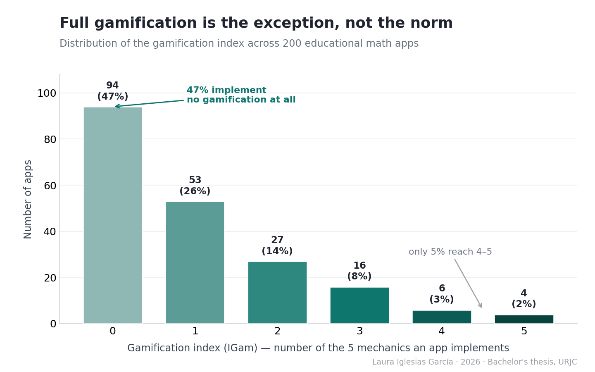
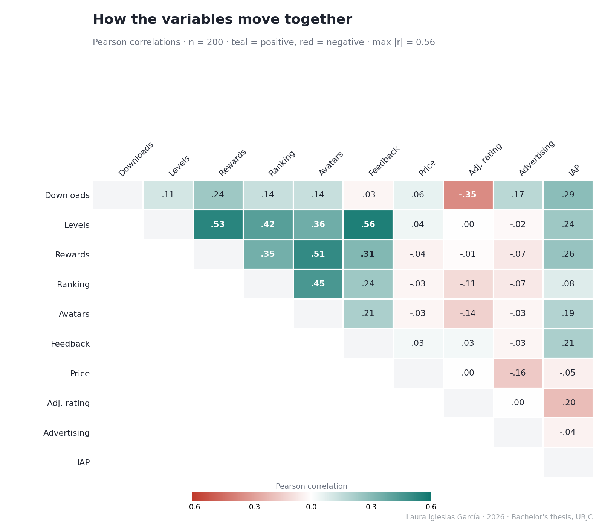
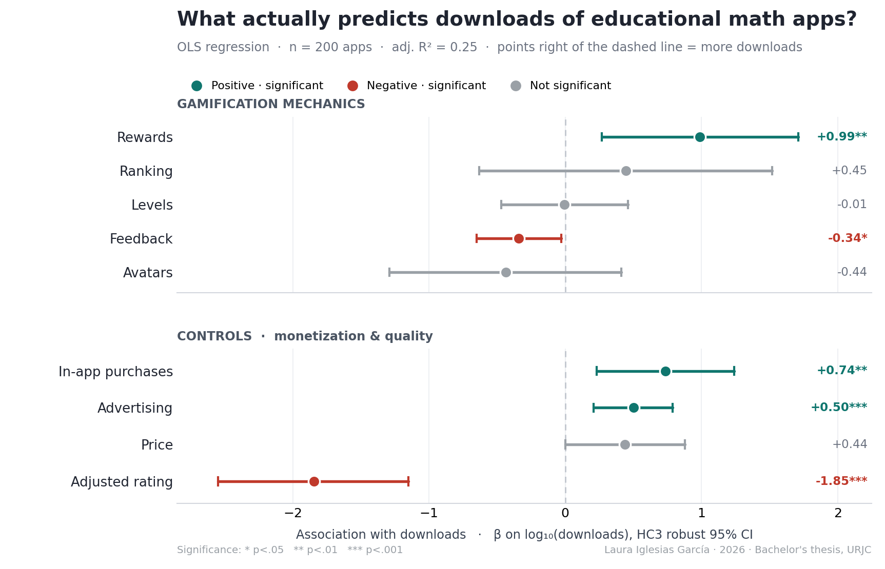

Gamification & Commercial Success in Educational Math Apps
An exploratory data analysis of Google Play Store open data (R)
Do gamification mechanics drive downloads of primary-school math apps? An OLS analysis of 200 Google Play apps in R, with a full robustness protocol. Only reward systems move the needle, and popularity is not a proxy for pedagogical quality.
Do gamification mechanics drive downloads of primary-school math apps? Using a stratified random sample of 200 apps drawn from a cleaned population of 4,218 educational math apps, I fit a multiple linear regression (OLS) with HC3 robust standard errors and a full diagnostic and robustness protocol in R. Most mechanics show no significant association with downloads; only reward systems act as a genuine differentiator (roughly 9.7x more downloads), a result that holds across four independent robustness checks. The strongest overall driver is the freemium model. Commercial popularity is not a proxy for pedagogical quality.
Research question
Incorporating game mechanics (gamification) is one of the most common design responses in educational apps. But which mechanics, if any, are actually associated with commercial success (downloads) of primary-school math apps on the Google Play Store? And is popularity a reliable signal of pedagogical quality?
This is an observational, cross-sectional study. All results describe statistical associations, not causal relationships.
Data & methods
| Stage | Detail |
|---|---|
| Source | Google Play Store Apps (Kaggle, gauthamp10, 2021), ~2.3M raw records |
| Cleaning | Deduplication, null handling, Rating Count > 0, numeric coercion |
| Target population | 4,218 educational math apps via a precision-oriented semantic keyword filter (validated recall gap ~6.4%) |
| Sampling | Stratified random sampling on log10-downloads; 4 quartile strata; n = 200 (50 per stratum); design weights near-uniform (~21.09), so unweighted OLS is unbiased for the population |
| Coding | 5 binary gamification variables coded by manual interface inspection; inter-rater reliability via Cohen’s kappa (κ = 0.831 after reconciliation) |
| Model | OLS, log-level form; HC3 robust standard errors; Halvorsen-Palmquist correction for dummy variables |
| Diagnostics | VIF, Breusch-Pagan, Shapiro-Wilk + Q-Q, Cook’s distance |
| Robustness | Bootstrap (1,000 resamples), exact Fisher test, re-estimation without influential points, Bayesian-shrinkage hyperparameter sensitivity |
The five gamification mechanics: Levels, Rewards, Ranking, Avatars, Feedback. Controls: Price, adjusted Rating (Bayesian shrinkage), Advertising, In-app purchases (IAP).
The data at a glance
Before modelling, two patterns are worth seeing directly.


Key results: Model I (OLS, HC3 robust errors)

Dependent variable: log10(downloads). n = 200. R²_adj = 0.248; F(9, 190) = 8.28, p < 0.001.
| Predictor | β | p | Interpretation |
|---|---|---|---|
| Rewards | 0.986 | 0.008 ** | ~9.7x downloads, the only gamification differentiator |
| In-app purchases | 0.736 | 0.005 ** | ~5.4x downloads (freemium effect) |
| Advertising | 0.501 | 0.001 *** | ~3.2x downloads |
| Adjusted rating | -1.846 | <0.001 *** | quality is not mass popularity |
| Feedback | -0.343 | 0.030 * | marks niche / academic apps |
| Levels | -0.006 | 0.979 | now a baseline “hygiene” feature |
| Ranking | 0.445 | 0.417 | not significant |
| Avatars | -0.436 | 0.315 | not significant |
| Price | 0.438 | 0.052 | marginal |
Reading of the headline finding. Only reward systems are significantly associated with downloads. Applying the Halvorsen-Palmquist correction, (10^0.986 - 1) * 100 works out to about +870%, meaning apps with reward systems are associated with roughly 9.7x the downloads of comparable apps without them, holding the other factors constant. Levels and Ranking behave as hygiene factors (Herzberg): so standard that their presence no longer differentiates.
Robustness of the Rewards coefficient
| Check | Result | Conclusion |
|---|---|---|
| Drop influential obs. | β = 1.566, p < 0.001, R²_adj = 0.322 | Effect strengthens |
| Bootstrap (1,000) | 95% CI [0.17; 1.64] | Excludes zero |
| Exact Fisher (Stratum by Rewards) | p = 0.002 | Concentration in high stratum not random |
| m0 sensitivity (6 values) | β in [0.954; 1.006], p < 0.01 throughout | Independent of hyperparameter |
The code (illustrative)
The full, ordered scripts live in /R. Two representative excerpts:
Bayesian shrinkage estimator for perceived quality
vi <- apps$`Rating Count`; Ri <- apps$Rating
C <- mean(Ri, na.rm = TRUE)
m0 <- quantile(vi, 0.75, na.rm = TRUE)
apps$Rating_Adj <- (vi / (vi + m0)) * Ri + (m0 / (vi + m0)) * CModel I with HC3 robust standard errors
model_I <- lm(LogMaxInstalls ~ V_Niveles + V_Recompensas + V_Ranking +
V_Avatares + V_Feedback + Price + Rating_Adj +
ADS_bin + IAP_bin, data = apps)
coeftest(model_I, vcov = vcovHC(model_I, type = "HC3"))Takeaways
- For developers: invest in well-integrated reward systems and a freemium model; levels and rankings alone no longer move the needle.
- For educators: download counts are not a quality signal, since the best-rated apps tend to be niche tools with small, loyal audiences.
- Limitation: store metrics capture commercial reach, not learning. Measuring real educational impact would need longitudinal usage data.
Full written thesis (Spanish) in /report. Code under MIT license; data obtained from Kaggle (see /data).